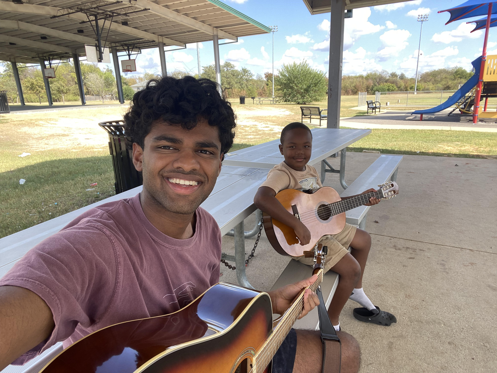
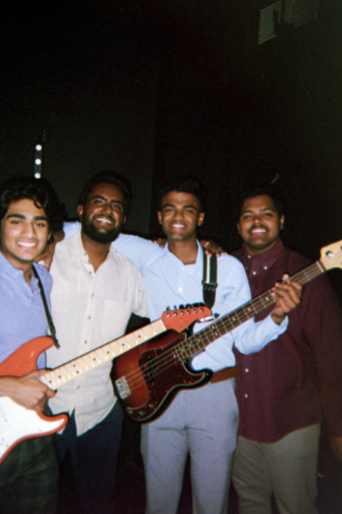

I serve with a mentorship organization that supports young men (ages 5-17) from underserved areas of Bryan and College Station. We focus on consistency, encouragement, and practical skills. I help with homework check-ins, organizing activities, and sharing basic tech literacy, anything from setting up a first email account to brainstorming small projects that build confidence. For me, the goal is to show up reliably and listen first. The most rewarding moments are when a student takes ownership of an idea and runs with it.
I'm part of a worship team, which has taught me collaboration, preparation, and how to stay calm under time pressure. Musically, I enjoy connecting technical gear knowledge with people-first problem solving—setting up signal chains, solving routing issues, and making sure the tech supports the purpose of the event rather than getting in the way.
